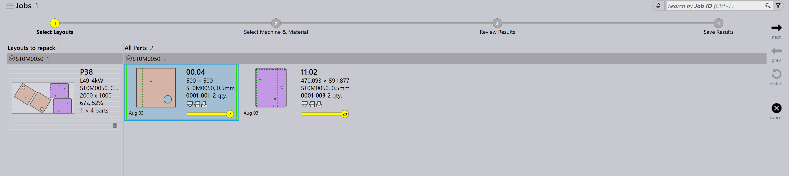

Panel układu
W tej sekcji omówiono czynności związane z układem, takie jak Send to machine, Recall from machine, Export outputs, Mark complete, Add parts…, Adapt/Compact…, Split layout oraz inne opcje służące do zarządzania instancjami układów.

|
|
Send to machine
-
Gdy nest jest gotowy (wypełniony lub pilnie potrzebny), możesz go wysłać do maszyny.
-
Kliknij nest prawym przyciskiem myszy i wybierz Send to machine….
-
Automatycznie tworzony jest folder o nazwie nestu.
-
Pliki wyjściowe (fxlyt, NC, report, csv) są eksportowane do lokalizacji wyjściowej JOB.
-
Nesty wysłane do maszyny są pokazywane z niebieskim znacznikiem.
| Po zwolnieniu te nesty nie są już ponawiane do przepakowywania. |
Recall from machine
-
Jeśli dane wyjściowe wymagają walidacji lub aktualizacji (na przykład dodania więcej części):
-
Kliknij prawym przyciskiem myszy wyeksportowany układ.
-
Wybierz Recall from machine….
-
-
Pliki wyjściowe i folder (fxlyt, NC, report, csv) zostają usunięte.
-
Nest ponownie staje się edytowalny.
-
Możesz wprowadzić zmiany i ponownie wysłać go do maszyny.
Export outputs
-
Kliknij prawym przyciskiem myszy dowolny układ (nest), który został wysłany do maszyny, i kliknij Export outputs.
-
Opcja Export Outputs eksportuje pliki NC, Report oraz Layout do odpowiednich folderów wyjściowych maszyny.
-
Ta opcja generuje ponownie plik NC z bieżącymi ustawieniami jednostek dla układu.
| Export Outputs nie jest dostępne dla układów, które są ukończone, oraz układów oczekujących w kolejce na przepakowywanie. |
Oznaczanie jako ukończone
-
Po przetworzeniu nestu na maszynie kliknij nest prawym przyciskiem myszy i wybierz Mark complete….
-
Możesz zaznaczyć wiele nestów i oznaczyć je jako ukończone jednocześnie.
-
Gdy nest zostanie oznaczony jako ukończony:
-
Jest wyszarzany, przenoszony na koniec listy i pokazywany z zielonym znacznikiem.
-
Układ jest usuwany z listy aktywnych układów.
-
Statusy części i zadania job są aktualizowane, a przetworzone ilości przechodzą do stanu ukończonego.
-
Pliki wyjściowe dla tego układu są usuwane z lokalizacji wyjściowej maszyny, aby uniknąć ich powtórnego użycia.
-
Add parts…

-
Użyj tej opcji, aby dodać więcej części do stosunkowo słabo zapakowanego układu. Podobnie jak interaktywny nesting, jest to opcja oparta na kreatorze i można jej użyć dla pojedynczego lub wielu układów jednocześnie.
-
TruSmartCAM osadza kreator przepakowywania układu w głównym obszarze roboczym, gdy ta opcja jest używana. Przytrzymaj klawisz Ctrl i wybierz jedną lub więcej części do zapakowania na układzie(-ach) i naciśnij Next.

-
Wybrane części są wyświetlane w następnym kroku z edytowalną kolumną ilości. Zaktualizuj ilości części, jeśli to konieczne, w polu Update Qty. Kliknij Next, aby przejść do nestingu. Zwróć uwagę, że ilości można tylko zwiększać, nie można ich zmniejszać.
-
Wszystkie układy są poddawane nestingowi oddzielnie, a wyniki nestingu są wyświetlane z nowo zapakowanymi częściami umieszczonymi na nich. Wybranie układu wyświetla wszystkie istniejące części układu. Wynik jest automatycznie odrzucany, jeśli podczas przepakowywania nie zostanie umieszczona żadna nowa część. Układ z wieloma kopiami może skutkować różnymi wzorami po przepakowaniu.
Adapt/Compact…
-
To polecenie oparte na kreatorze może służyć do adaptacji układu z jednej maszyny na inną, gdy oryginalna maszyna jest niedostępna lub gdy obciążenie maszyny wymaga zbilansowania.

-
Można go użyć, gdy zaplanowany arkusz jest niedostępny w magazynie, a układ wymaga ponownego zaplanowania na innym dostępnym arkuszu.
-
Możesz scalać układy zapakowane na mniejszych arkuszach na większe arkusze, aby używać materiału bardziej efektywnie.
-
Możesz dzielić układy zapakowane na większych arkuszach na mniejsze arkusze, jeśli duże zapasy arkuszy są niedostępne.
-
Możesz zwiększyć wydajność pakowania wielu układów (nawet z różnych maszyn), scalając je razem.
-
Aby go użyć, wybierz jeden lub więcej układów i kliknij Adapt/Compact…, aby otworzyć kreator w obszarze roboczym.

-
Lewy panel pokazuje wszystkie wybrane układy, a panel Parts pokazuje części układu.
-
Wybierz docelową maszynę i materiał arkusza, a następnie kliknij next, aby wykonać ponowny nesting.
-
Nowe wyniki nestingu są pokazywane w panelu wyników.
-
Kliknij next, aby zapisać zaadaptowany lub zagęszczony układ.

Dzielenie układu
Opcja Split layouts… umożliwia podzielenie istniejącego układu na wiele układów poprzez modyfikację ilości, bez konieczności ponownego wykonywania toolingu lub nestingu.
Ta funkcja jest szczególnie przydatna w następujących scenariuszach:
-
Gdy musisz wyprodukować część całkowitej ilości natychmiast, planując pozostałą ilość na późniejszą produkcję.
-
Gdy wymagania produkcyjne muszą zostać rozdzielone na wiele zmian lub dni, aby zoptymalizować workflow i wykorzystanie zasobów.
-
Gdy określona maszyna jest tymczasowo niedostępna lub zajęta, a musisz dostosować układ do bieżących ograniczeń produkcyjnych.
Aby podzielić układ, wykonaj następujące kroki:
-
W widoku układów wybierz wymagany układ.

-
Kliknij Split layouts….
-
Wprowadź wymaganą wartość w polu New Copies.

-
Kliknij OK.

Wybrany układ jest teraz podzielony na dwa układy z dostosowanymi ilościami.